An Integration of Precipitation Spatial Interpolation Modelling using Thin Plate Spline Approach and Forecast by Exponential Smoothing Model in the Eastern Cape, South Africa
GIS Industrial Project CPUT
RStudio and Jupyter Notebook Code: Github Repository Code
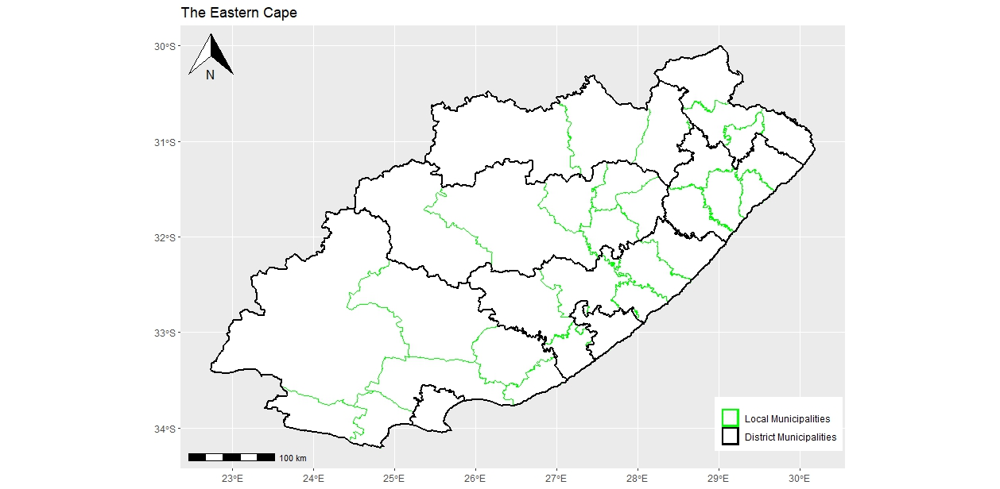

Testing and Training Data
Dataset
Spatial Location of Eastern Cape Weather Stations for Training, and Testing Dataset
View
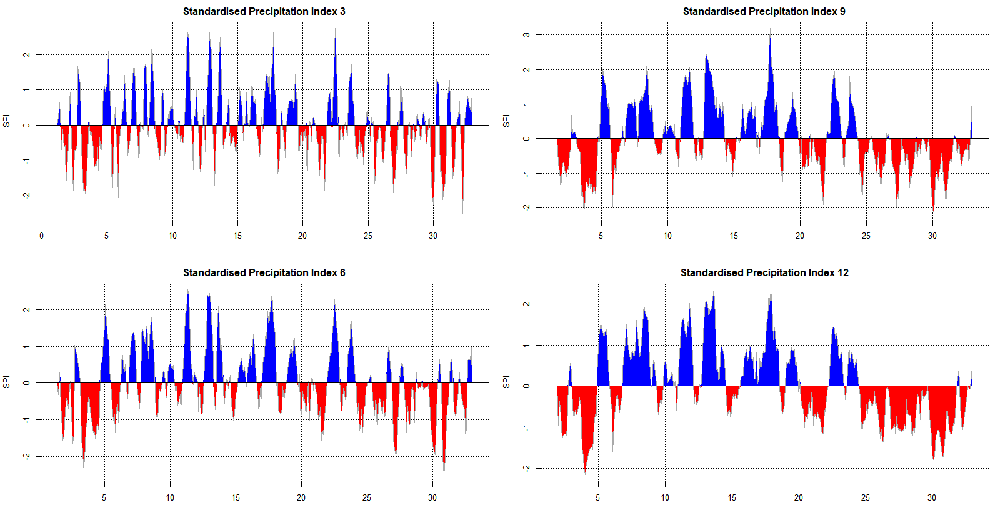

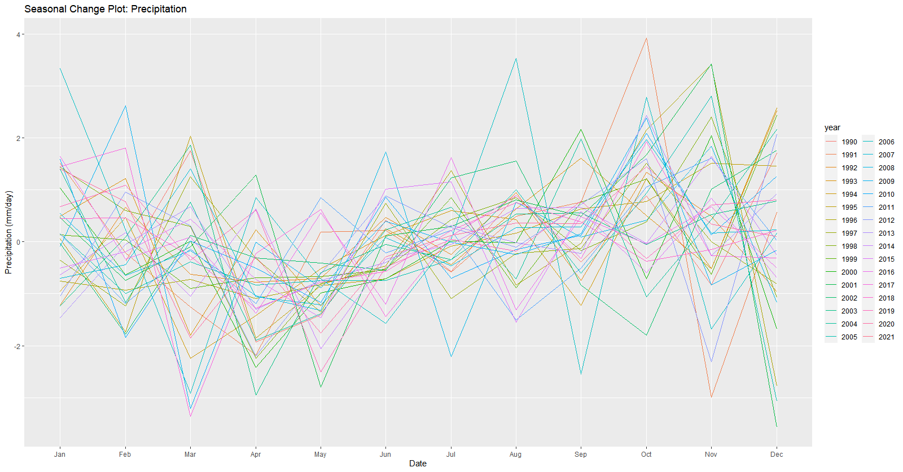


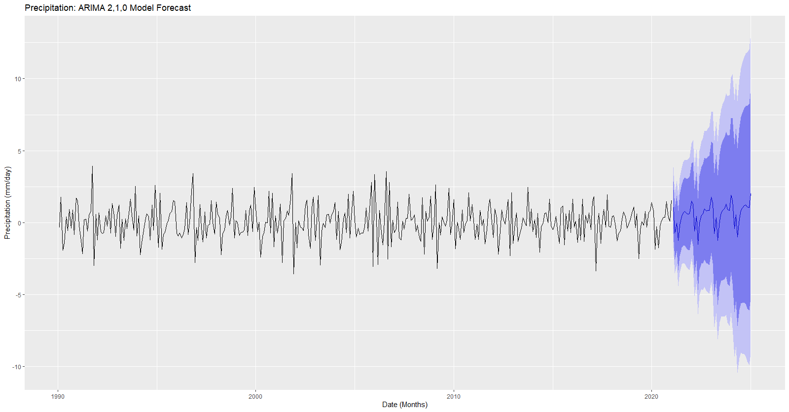
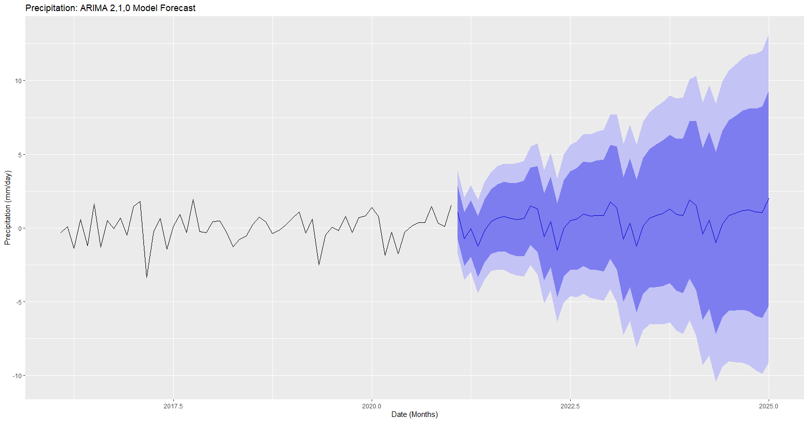
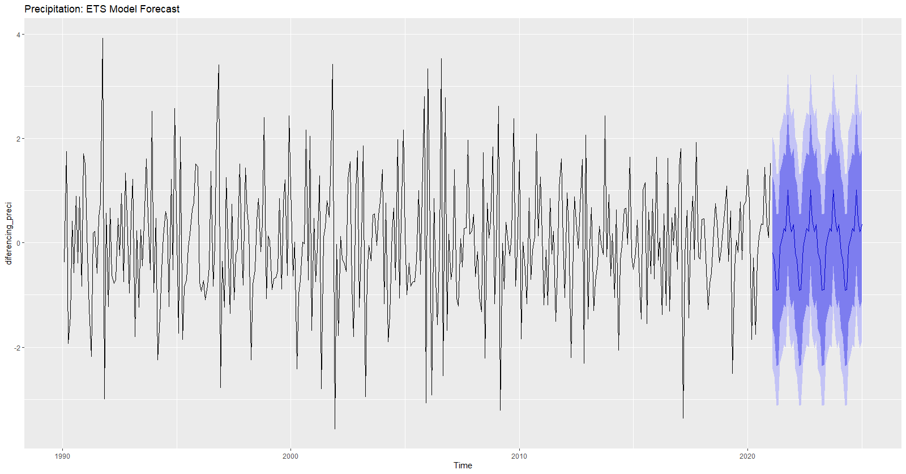
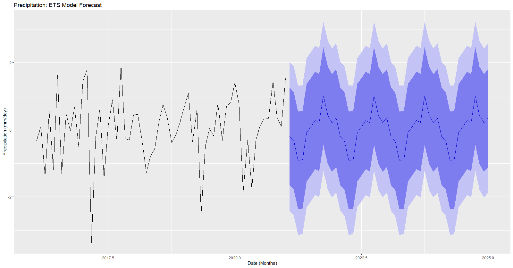
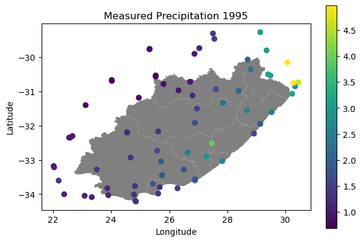
Interpolation Analysis
Pont Distribution Map 1995
Measured Precipitation Continuos Change for 1995
View
Interpolation Analysis
Pont Distribution Map 2000
Measured Precipitation Continuos Change for 2000
View
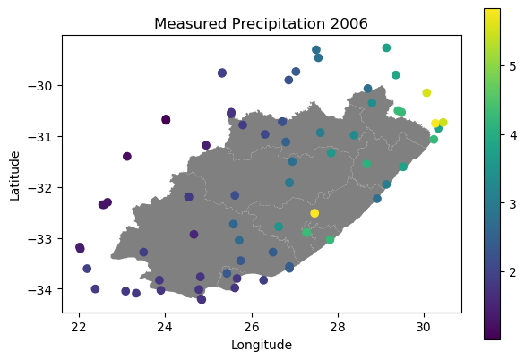
Interpolation Analysis
Pont Distribution Map 2006
Measured Precipitation Continuos Change for 2006
View
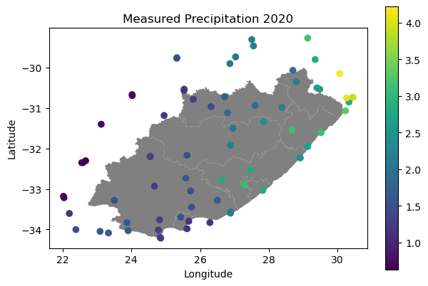
Interpolation Analysis
Pont Distribution Map 2020
Measured Precipitation Continuos Change for 2020
View
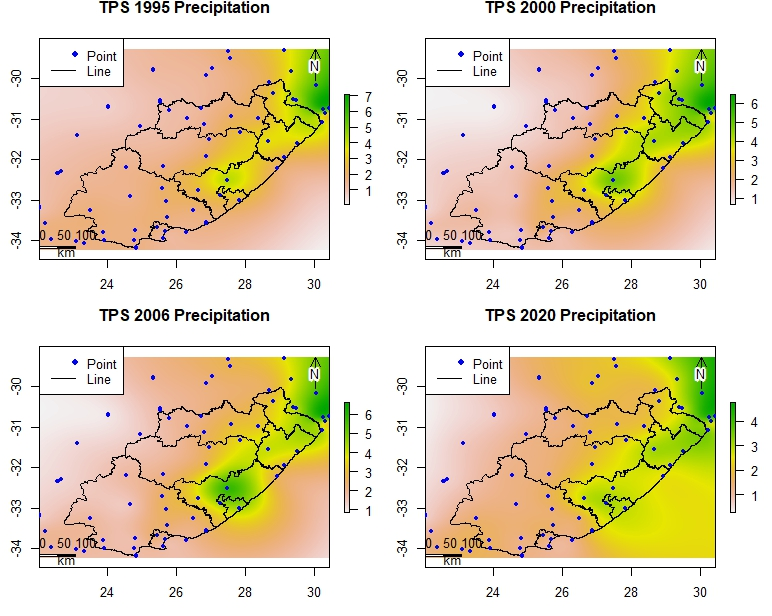
Spatial Interpolation Modeling
Thin Plate Spline
Thin Plate Spatial Prediction for 1995, 2000, 2006 and 2020
View
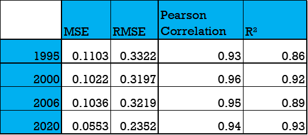
Spatial Interpolation Modeling Validation
Thin Plate Spline: Cross Validation
Thin Plate Validation for 1995, 2000, 2006 and 2020
View